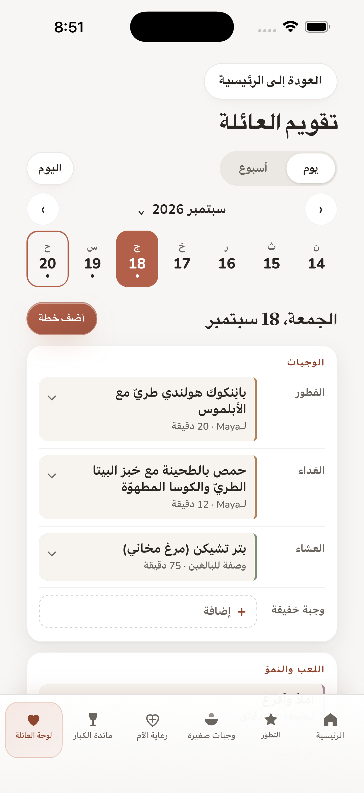

التطوّر
أفكار للعب وكتب وحيوانات حقيقية تستكشفها مع طفلك.
المزيد عن هذا القسم
- التطوّر. أنشطة قصيرة يقودها البالغ، وإرشادات للقراءة، وحيوانات حقيقية لوقت هادئ معًا.
اكتشف أفكارًا للوجبات، ولعبًا وكتبًا بحسب العمر، ورعاية الأم من الحمل حتى السنة الأولى بعد الولادة. اجمع الأفكار التي تختارها في تقويم عائلتك.
لأجهزة iPhone · بالعربية والإنجليزية والإسبانية
يلزم اشتراك بعد الإعداد.
يعرض App Store الإصدار الحالي، وتعرض Apple السعر المحلي وفترة الفوترة قبل تأكيد الشراء.

اكتشف وجبة لتحضيرها، أو كتابًا لقراءته، أو نشاطًا لتجربته مع طفلك.
أضف الأفكار التي تختارها إلى تقويمك، مع ملاحظاتك وقائمة مشترياتك.
عاين يومًا أو أسبوعًا أو شهرًا، واختر من تشاركه المعاينة. وتبقى التعديلات اللاحقة على جهازك.
أفكار للعب وكتب وحيوانات حقيقية تستكشفها مع طفلك.

أفكار للوجبات بحسب العمر، ووصفات ومسبّبات الحساسية والتحضير الآمن حيثما يتاح القسم.

معلومات عامة من الحمل حتى السنة الأولى بعد الولادة.

وجبات للبالغين، ووصفات قابلة للبحث، وقوائم تسوّق.
الملفات وسجل الطهو والتذكيرات والإعدادات والنسخ الاحتياطي والاستعادة في مكان واحد.
تُحفظ خطط العائلة على هذا الجهاز. وأنت تختار متى تشارك محتوى محددًا أو تصدّر نسخة احتياطية مشفّرة.
الخصوصية. تُحفظ البيانات التي تدخلها الأسرة في مساحة تخزين التطبيق على الجهاز ولا تُرسل تلقائيًا إلى عالم عائلتي. ويُحفظ تفضيل واحد لرعاية الأم من الإعداد في التطبيق ولا يُرسل إلى عالم عائلتي. ويمكن لأحد الوالدين مشاركة محتوى محدد أو تصدير نسخة احتياطية مشفّرة عن قصد. وعلى أجهزة Apple، يتصل التطبيق بصورة منفصلة بخدمات Apple للمنتجات والاستحقاق والشراء والاستعادة، ولا ترسل هذه الفحوص أي بيانات أدخلتها الأسرة إلى عالم عائلتي. وفي الإصدار 1.6، تُحفظ خطط تقويم العائلة في التطبيق أيضًا ولا تُرسل إلى عالم عائلتي، وتُحمَّل صور أغلفة الكتب في قائمة الكتب عبر الإنترنت من Open Library، ومن خوادم Internet Archive لبعض الأغلفة.
تتضمن رعاية الأم معلومات عامة وعلامات خطر عاجلة وروابط إلى مصادر رسمية مسمّاة.
ولا تشخّص الأعراض ولا تقيّمها ولا تحل محل الطبيب. ولم تراجع المصادر المسمّاة التطبيق أو تعتمده أو تزكّه.
الاشتراك. عند تثبيت التطبيق تثبيتًا جديدًا، يلزم اشتراك شهري أو سنوي موثّق بعد الإعداد. وتتجدد الخطة المختارة تلقائيًا ما لم يُلغَ الاشتراك، ويمكن إلغاؤه في أي وقت من إعدادات حساب Apple. وإذا تعذّر تحميل الخطط أو الحالة، تتوفر إعادة المحاولة واستعادة المشتريات فقط.
مساحة هادئة واحدة للأم والعائلة: رعاية الأم، والتطوّر، ووجبات صغيرة، ومائدة الكبار، ولوحة العائلة، باللغات العربية والإنجليزية والإسبانية. ويضيف الإصدار 1.6 تقويم العائلة. وتتوفر هذه الصفحة أيضًا بالإنجليزية والإسبانية، أما صفحتا الخصوصية والشروط فبالعربية والإنجليزية.
التوفر في App Store: عالم عائلتي متاح على App Store لأجهزة iPhone في دول ومناطق كثيرة، من بينها المملكة العربية السعودية والإمارات العربية المتحدة وسائر دول الخليج والمملكة المتحدة والولايات المتحدة والهند ودول الاتحاد الأوروبي والمكسيك ودول أخرى في أمريكا اللاتينية. والإصدار 1.7 متاح على App Store.
للمساعدة في الإعداد أو الاشتراكات أو التذكيرات أو المشاركة أو النسخ الاحتياطي أو تقويم العائلة في الإصدار 1.6 أو أي ميزة أخرى، يُرجى إرسال بريد إلى msalamissa@alumni.ie.edu. يمكن ذكر نسخة التطبيق وما كان يجري تنفيذه، من دون إرسال اسم طفل أو تفاصيل صحية خاصة.